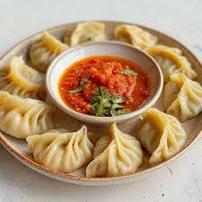

Chicken Momo

- Ingredients
- All-purpose Flour
- Water
- Salt
- Ground Chicken
- Onion
- Garlic
- Ginger
- Coriander
- Green Chillies
- Soy Sauce
- Recipe
- Mix flour, water, and a pinch of salt to make a smooth dough.
- Roll the dough into thin circles to form momo wrappers.
- Prepare the filling by mixing chicken, chopped onion, garlic, ginger, coriander, green chillies, and soy sauce.
- Place a spoonful of filling in the center of each wrapper and fold to seal.
- Steam the momos for 10-15 minutes until fully cooked.
- Serve hot with spicy tomato chutney.